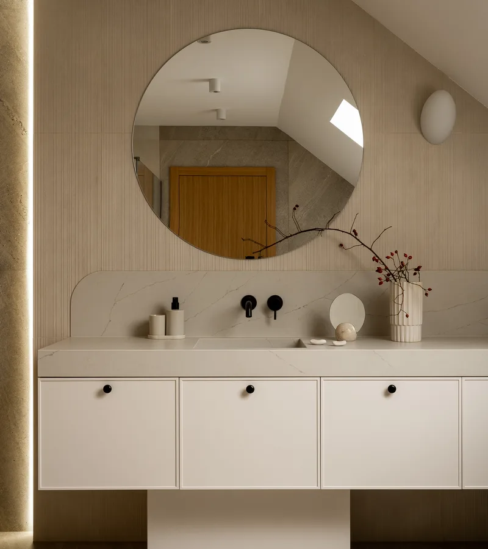
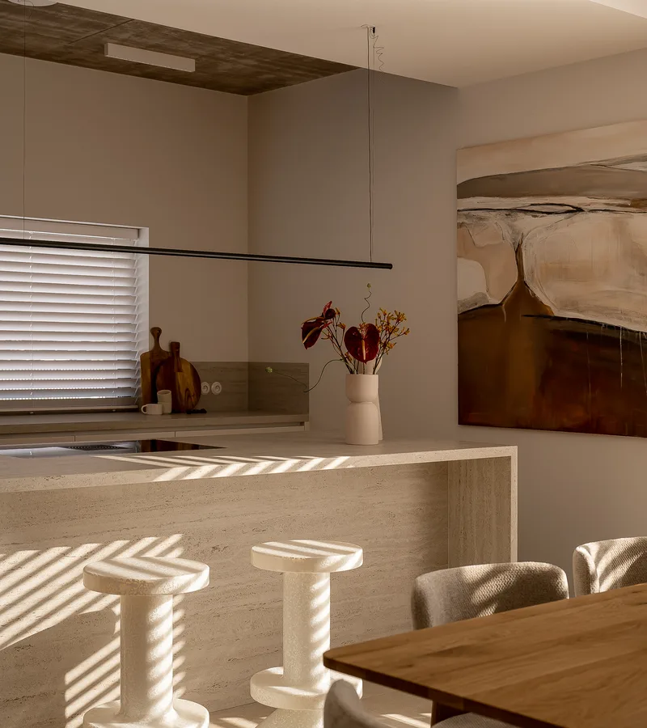
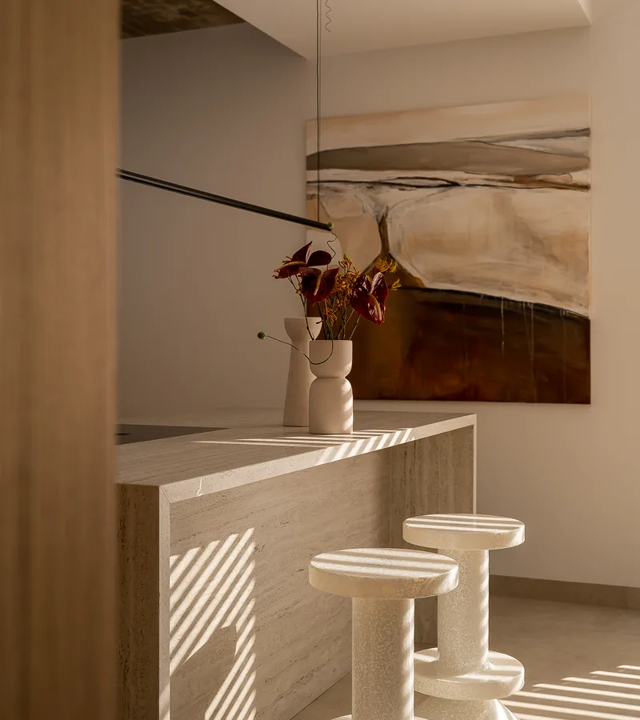
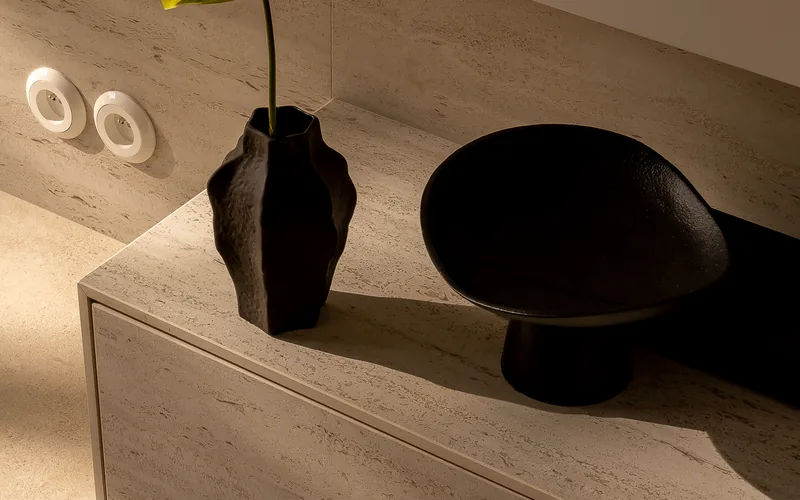
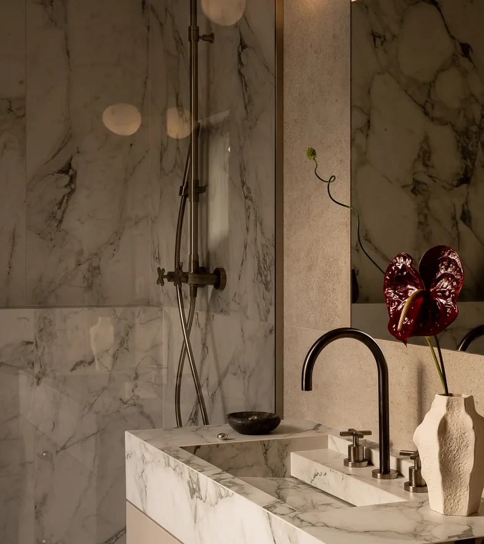

Nasze materiały
Pracujemy wyłącznie z najwyższej jakości surowcami naturalnymi. Każdy kamień jest niepowtarzalny — oto nasze materiały.

Symbol luksusu i elegancji od tysięcy lat. Carrara, Calacatta, Statuario — każdy kawałek marmuru jest niepowtarzalny. Idealny do blatów, posadzek, łazienek i elementów dekoracyjnych. Jego naturalne żyłkowanie czyni go prawdziwym dziełem natury.
Marmur to kamień metamorficzny o wyjątkowej estetyce. Oferujemy szeroką gamę marmurów z Włoch, Grecji, Turcji i Hiszpanii. Każda płyta jest starannie selekcjonowana pod kątem koloru, wzoru i jakości.
Importujemy najlepsze materiały z kamieniołomów na całym świecie.

Niezwykle twardy i odporny na zarysowania, wysokie temperatury oraz substancje chemiczne. Doskonały na blaty kuchenne, schody, posadzki i elementy zewnętrzne. Dostępny w setkach kolorów i wzorów — od subtelnych po spektakularne.
Granit to skała magmowa o najwyższej twardości wśród kamieni naturalnych. Idealny wybór tam, gdzie liczy się trwałość i odporność na intensywne użytkowanie.

Kamień o ciepłym, naturalnym wyglądzie z charakterystyczną porowatą strukturą. Trawertyn nadaje wnętrzom śródziemnomorski klimat. Doskonale sprawdza się na posadzkach, ścianach, tarasach i przy basenach.
Oferujemy wykończenie polerowane, szczotkowane i tumblowane. Trawertyn jest dostępny w odcieniach od kremowej bieli po ciepły orzech.

Półprzezroczysty kamień o hipnotyzujących wzorach i niezwykłej głębi. Podświetlony onyks tworzy spektakularne efekty świetlne. Stosowany w luksusowych wnętrzach jako okładziny ścienne, bary, blaty i elementy dekoracyjne.
Prawdziwy klejnot wśród kamieni. Onyks to wybór dla najbardziej wymagających klientów, którzy chcą stworzyć wyjątkowe, niepowtarzalne wnętrze.

Naturalny kamień o wyjątkowej twardości i odporności. Kwarcyt łączy piękno marmuru z trwałością granitu. Dostępny w odcieniach bieli, szarości, złota i różu.
Idealny wybór dla osób ceniących elegancję i praktyczność. Kwarcyt doskonale sprawdza się jako blaty kuchenne, posadzki i okładziny ścienne.
Zapraszamy do współpracy
Skontaktuj się z nami — doradzimy najlepsze rozwiązanie dla Twojego projektu. Oferujemy bezpłatną wycenę i profesjonalne doradztwo.
Skontaktuj się